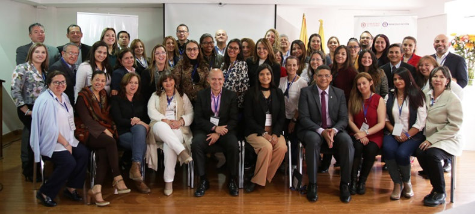

Taller Calidad ES de Todos 2018-2019
Con la finalidad de recibir propuestas que permitieran articular debidamente el Sistema de Aseguramiento de la Calidad de la Educación Superior y la definición de estrategias tendientes a la construcción de parámetros técnicos para su regulación, se desarrollaron 20 “Talleres Calidad ES de Todos” en dos ciclos, un primer ciclo, realizado entre octubre y noviembre de 2018, con el fin de validar el estado del arte del sistema de aseguramiento de la calidad en Colombia frente a otros referentes. Estos talleres se realizaron en cuatro ciudades de Colombia con la participación de 130 instituciones y 365 participantes. Resultados que fueron sistematizados y puestos a consideración, en un segundo ciclo, del sector con un desarrollo basado en las condiciones institucionales y de programas determinadas por la Ley 1188 de 2008. A este segundo ciclo asistieron 243 instituciones y 493 participantes.
Producto de este proceso, el 25 de julio de 2019 fue expedido el Decreto 1330 de 2019, el cual tiene como objetivo reglamentar el Sistema de Aseguramiento de Calidad de la Educación Superior, brindando un enfoque hacia el aprendizaje, la optimización del proceso de registro calificado, el reconocimiento de la diversidad, el fomento de la cobertura, entre otros beneficios; considerados por los actores un cambio positivo en el Sistema de Aseguramiento de la Calidad de Educación Superior. Los aspectos que se fortalecen con esta nueva normatividad son:
- Consolidación de una visión compartida de calidad, entendida como el conjunto de atributos articulados, interdependientes, dinámicos, construidos con la comunidad académica como referentes, y que responden a las demandas sociales, culturales y ambientales. Este concepto reconoce la diversidad de las IES, su naturaleza y objetivos institucionales de forma diferenciada.
- Respuesta a las nuevas tendencias educativas. El Decreto promueve la oferta de programas en las diferentes modalidades: presencial, a distancia, virtual, dual u otros que combinen e integren las anteriores modalidades y metodologías adecuados con las necesidades poblacionales y territoriales.
- Articulación entre actores que determinan la calidad en materia de Educación Superior (CNA, CESU, CONACES, el Ministerio y otras entidades) y reconocimiento de la diversidad de Instituciones que componen el Sistema de Educación Superior para garantizar la equidad.
- Incorporación de las condiciones de evaluación de instituciones y programas de manera independiente en el proceso de Registro Calificado, donde no solo se evalúan las capacidades y procesos, sino los resultados académicos que vinculan el aprendizaje de los estudiantes.
- Posibilidad de ofrecer bajo un registro calificado único un programa académico con el mismo contenido curricular en diversas modalidades y/o en diferentes municipios. Esto les permitirá a las instituciones mayor agilidad en la oferta de programas, para responder a las exigencias de calidad de la educación superior en un contexto local, regional y global.
- Formación en investigación, permitiendo la incorporación de los estudiantes en estas prácticas en concordancia con el nivel educativo en el que desarrollen sus estudios (ya sea universitario, técnico profesional o tecnológico). Esta formación tendrá en cuenta la naturaleza de la institución y el uso de las Tecnologías de la Información y de la Comunicaciones para el logro de los aprendizajes.
- Confianza en el reconocimiento en alta calidad de las instituciones y los programas por parte del Consejo Nacional de Acreditación. El registro calificado de estos programas, su renovación o modificación será otorgado por el MEN, en el marco del proceso adelantado previamente para la acreditación.
- Modernización del Sistema de Aseguramiento de la Calidad y fomento a la corresponsabilidad de todos los actores del Sistema, a través del desarrollo de una cultura de autoevaluación, autorregulación y mejoramiento continuo.
